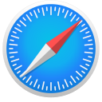

Web Browsers
These are our currently recommended web browsers and configurations. In general, we recommend keeping extensions to a minimum: they have privileged access within your browser, require you to trust the developer, can make you stand out, and weaken site isolation.
General Recommendations¶
Tor Browser¶
Recommendation
Tor Browser is the choice if you need anonymity. This browser provides you with access to the Tor Bridges and Tor Network, along with extensions that can be automatically configured to fit its three security levels: Standard, Safer and Safest. We recommend that you do not change any of Tor Browser's default configurations outside of the standard security levels.
Danger
You should never install any additional extensions on Tor Browser, including the ones we suggest for Firefox. Browser extensions make you stand out from others on the Tor network, thus making your browser easier to fingerprint.
Desktop Recommendations¶
Firefox¶
Recommendation
Firefox provides strong privacy settings such as Enhanced Tracking Protection, which can help block various types of tracking.
Warning
Firefox includes a unique download token in downloads from Mozilla's website and uses telemetry in Firefox to send the token. The token is not included in releases from the Mozilla FTP.
Recommended Configuration¶
Tor Browser is the only way to truly browse the internet anonymously. When you use Firefox we recommend changing the following settings to protect your privacy from certain parties, but all browsers other than Tor Browser will be traceable by somebody in some regard or another.
These options can be found in → Settings → Privacy & Security.
Enhanced Tracking Protection¶
- Select Strict Enhanced Tracking Protection
This protects you by blocking social media trackers, fingerprinting scripts (note that this does not protect you from all fingerprinting), cryptominers, cross-site tracking cookies, and some other tracking content. ETP protects against many common threats, but it does not block all tracking avenues because it is designed to have minimal to no impact on site usability.
Sanitize on Close¶
If you want to stay logged in to particular sites, you can allow exceptions in Cookies and Site Data → Manage Exceptions...
- Check Delete cookies and site data when Firefox is closed
This protects you from persistent cookies, but does not protect you against cookies acquired during any one browsing session. When this is enabled, it becomes possible to easily cleanse your browser cookies by simply restarting Firefox. You can set exceptions on a per-site basis, if you wish to stay logged in to a particular site you visit often.
Search Suggestions¶
- Disable Suggestions from the web
- Disable Suggestions from sponsors
- Disable Improve the Firefox Suggest experience
Search suggestion features may not be available in your region.
Search suggestions send everything you type in the address bar to the default search engine, regardless of whether you submit an actual search. Disabling search suggestions allows you to more precisely control what data you send to your search engine provider.
Telemetry¶
- Uncheck Allow Firefox to send technical and interaction data to Mozilla
- Uncheck Allow Firefox to install and run studies
- Uncheck Allow Firefox to send backlogged crash reports on your behalf
Firefox sends data about your Firefox version and language; device operating system and hardware configuration; memory, basic information about crashes and errors; outcome of automated processes like updates, safebrowsing, and activation to us. When Firefox sends data to us, your IP address is temporarily collected as part of our server logs.
HTTPS-Only Mode¶
- Select Enable HTTPS-Only Mode in all windows
This prevents you from unintentionally connecting to a website in plain-text HTTP. Sites without HTTPS are uncommon nowadays, so this should have little to no impact on your day to day browsing.
Sync¶
Firefox Sync allows your browsing data (history, bookmarks, etc.) to be accessible on all your devices and protects it with E2EE.
Arkenfox (advanced)¶
The Arkenfox project provides a set of carefully considered options for Firefox. If you decide to use Arkenfox, a few options are subjectively strict and/or may cause some websites to not work properly - which you can easily change to suit your needs. We strongly recommend reading through their full wiki. Arkenfox also enables container support.
Brave¶
Recommendation
Brave Browser includes a built in content blocker and privacy features, many of which are enabled by default.
Brave is built upon the Chromium web browser project, so it should feel familiar and have minimal website compatibility issues.
We don't recommend Brave's mobile browser offerings as there are better options for mobile platforms.
- We advise against using the Flatpak version of Brave as it is believed to feature a weaker sandboxing system. As well, the package is not maintained by Brave Software, Inc.
Recommended Configuration¶
Tor Browser is the only way to truly browse the internet anonymously. When you use Brave we recommend changing the following settings to protect your privacy from certain parties, but all browsers other than the Tor Browser will be traceable by somebody in some regard or another.
These options can be found in → Settings.
Shields¶
Brave includes some anti-fingerprinting measures in its Shields feature. We suggest configuring these options globally across all pages that you visit.
Shields' options can be downgraded on a per-site basis as needed, but by default we recommend setting the following:
-
Select Aggressive under Trackers & ads blocking
Use default filter lists
Brave allows you to select additional content filters within the internal
brave://adblockpage. We advise against using this feature; instead, keep the default filter lists. Using extra lists will make you stand out from other Brave users and may also increase attack surface if there is an exploit in Brave and a malicious rule is added to one of the lists you use. -
(Optional) Select Block Scripts (1)
- Select Strict, may break sites under Block fingerprinting
- This option provides functionality similar to uBlock Origin's advanced blocking modes or the NoScript extension.
Social media blocking¶
- Uncheck all social media components
Privacy and Security¶
- Select Disable Non-Proxied UDP under WebRTC IP Handling Policy
- Uncheck Use Google services for push messaging
- Uncheck Allow privacy-preserving product analytics (P3A)
- Uncheck Automatically send daily usage ping to Brave
-
Select Always use secure connections in the Security menu
Sanitizing on Close
- Select Clear cookies and site data when you close all windows in the Cookies and other site data menu
If you wish to stay logged in to a particular site you visit often, you can set exceptions on a per-site basis under the Customized behaviors section.
Extensions¶
Disable built-in extensions you do not use in Extensions
- Uncheck Hangouts
- Uncheck Private window with Tor (1)
- Uncheck WebTorrent
- Brave is not as resistant to fingerprinting as the Tor Browser and far fewer people use Brave with Tor, so you will stand out. Where strong anonymity is required use the Tor Browser.
IPFS¶
InterPlanetary File System (IPFS) is a decentralized, peer-to-peer network for storing and sharing data in a distributed filesystem. Unless you use the feature, disable it.
- Select Disabled on Method to resolve IPFS resources
Additional settings¶
Under the system System menu
- Uncheck Continue running apps when Brave is closed to disable background apps (1)
- This option is not present on all platforms.
Mobile Recommendations¶
On Android, Firefox is still less secure than Chromium-based alternatives: Mozilla's engine, GeckoView, has yet to support site isolation or enable isolatedProcess.
On iOS, any app that can browse the web is restricted to using an Apple-provided WebKit framework, so there is little reason to use a third-party web browser.
Bromite¶
Recommendation

Bromite is a Chromium-based browser with privacy and security enhancements, built-in ad blocking, and some fingerprinting randomization.
- Neo Store users can enable the Bromite repository in → Repositories
These options can be found in →  Settings → Privacy and Security.
Settings → Privacy and Security.
Recommended Configuration¶
HTTPS-Only Mode¶
- Select Always use secure connections
This prevents you from unintentionally connecting to a website in plain-text HTTP. The HTTP protocol is extremely uncommon nowadays, so this should have little to no impact on your day to day browsing.
Always-on Incognito Mode¶
- Select Open links in incognito tabs always
- Select Close all open tabs on exit
- Select Open external links in incognito
Safari¶
Recommendation

Safari is the default browser in iOS. It includes privacy features such as Intelligent Tracking Protection, Privacy Report, isolated Private Browsing tabs, iCloud Private Relay, and automatic HTTPS upgrades.
Recommended Configuration¶
These options can be found in Settings → Safari → Privacy and Security.
Cross-Site Tracking Prevention¶
- Enable Prevent Cross-Site Tracking
This enables WebKit's Intelligent Tracking Protection. The feature helps protect against unwanted tracking by using on-device machine learning to stop trackers. ITP protects against many common threats, but it does not block all tracking avenues because it is designed to not interfere with website usability.
Privacy Report¶
Privacy Report provides a snapshot of cross-site trackers currently prevented from profiling you on the website you're visiting. It can also display a weekly report to show which trackers have been blocked over time.
Privacy Report is accessible via the Page Settings menu ().
Privacy Preserving Ad Measurement¶
- Disable Privacy Preserving Ad Measurement
Ad click measurement has traditionally used tracking technology that infringes on user privacy. Private Click Measurement is a WebKit feature and proposed web standard aimed towards allowing advertisers to measure the effectiveness of web campaigns without compromising on user privacy.
The feature has little privacy concerns on its own, so while you can choose to leave it on, we consider the fact that it's automatically disabled in Private Browsing to be an indicator for disabling the feature.
Apple Pay¶
If you do not use Apple Pay, you can toggle off the ability for websites to check for it.
- Disable Allow websites to check for Apple Pay and Apple Card
Always-on Private Browsing¶
Open Safari and tap the Tabs button, located in the bottom right. Then, expand the Tab Groups list.
- Select Private
Safari's Private Browsing mode offers additional privacy protections. Private Browsing uses a new ephemeral session for each tab, meaning tabs are isolated from one another. There are also other smaller privacy benefits with Private Browsing, such as not sending a webpage’s address to Apple when using Safari's translation feature.
Do note that Private Browsing does not save cookies and website data, so it won't be possible to remain signed into sites. This may be an inconvenience.
iCloud Sync¶
Synchronization of Safari History, Tab Groups, iCloud Tabs, and saved passwords are E2EE. However, bookmarks are not. Apple can decrypt and access them in accordance with their privacy policy.
If you use iCloud, we also recommend checking to ensure Safari's default download location is set to locally on your device. This option can be found in Settings → Safari → General → Downloads.
Additional Resources¶
We generally do not recommend installing any extensions as they increase your attack surface. However, uBlock Origin or AdGuard may prove useful if you value content blocking functionality.
uBlock Origin¶
Recommendation
uBlock Origin is a popular content blocker that could help you block ads, trackers, and fingerprinting scripts.
We suggest leaving the extension in its default configuration. Additional filter lists can impact performance and may increase attack surface, so only apply what you need. If there is a vulnerability in uBlock Origin a third party filter could add malicious rules that can potentially steal user data.
uBlock Origin is also a Mozilla  Recommended Extension. Recommended extensions are manually reviewed by Mozilla staff security experts to ensure they meet the highest standards of security, functionality, and user experience.
Recommended Extension. Recommended extensions are manually reviewed by Mozilla staff security experts to ensure they meet the highest standards of security, functionality, and user experience.
AdGuard for Safari¶
Recommendation
AdGuard for Safari is a free and open-source content-blocking extension for Safari that uses the native Content Blocker API.
We suggest enabling the filters labled #recommended under the "Ad Blocking" and "Privacy" content blockers. The #recommended filters can also be enabled for the "Social Widgets" and "Annoyances" content blockers, but they may break some social media functions.
Additional filter lists do slow things down and may increase your attack surface, so only apply what you need.
There is also AdGuard for iOS which is able to perform system-wide content blocking by means of DNS filtering.
Snowflake¶
Recommendation


Snowflake allows you to donate bandwidth to the Tor Project by operating a "Snowflake proxy" within your browser. People who are censored can use Snowflake proxies to connect to the Tor network. Snowflake is a great way to contribute to the network even if you don't have the technical know-how to run a Tor relay or bridge.
Snowflake does not increase your privacy in any way, nor is it used to connect to the Tor network within your personal browser. However, if your internet connection is uncensored, you should consider running it to help people in censored networks achieve better privacy themselves. There is no need to worry about which websites people are accessing through your proxy—their visible browsing IP address will match their Tor exit node, not yours.
Running a Snowflake proxy is low-risk, even moreso than running a Tor relay or bridge which are already not particularly risky endeavours. However, it does still proxy traffic through your network which can be impactful in some ways, especially if your network is bandwidth-limited. Make sure you understand how Snowflake works before deciding whether to run a proxy.
You can enable Snowflake in your browser by clicking the switch below and leaving this page open. You can also install Snowflake as a browser extension to have it always run while your browser is open, however adding third-party extensions can increase your attack surface.
Terms of Service; Didn't Read¶
Recommendation
Terms of Service; Didn't Read grades websites based on their terms of service agreements and privacy policies. It also gives short summaries of those agreements. The analyses and ratings are published transparently by a community of reviewers.
We do not recommend installing ToS;DR as a browser extension; the same information is also provided on their website.